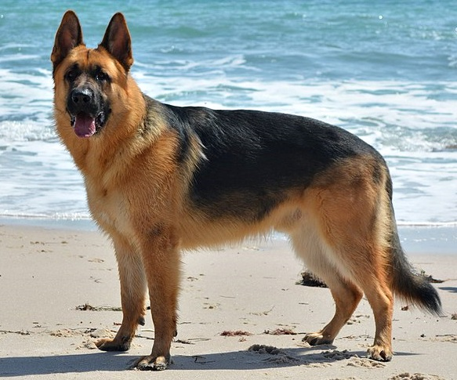

Dogs

German Shephards
The German Shepherd,is a German breed of working dog of medium to large size. It is characterized by its intelligent and obedient nature

Chihuahuas
The Chihuahua is a Mexican breed of toy dog and the smallest recognized dog breed in the world.